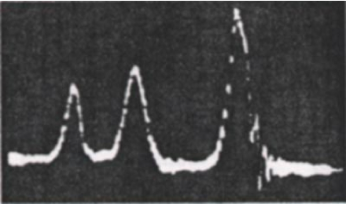
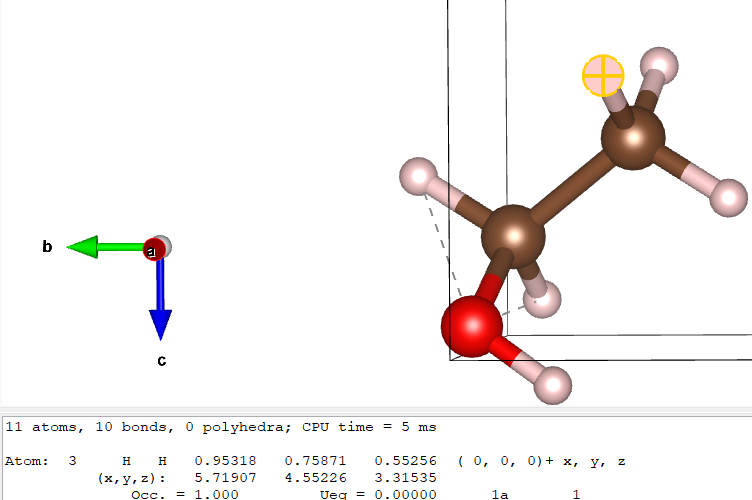
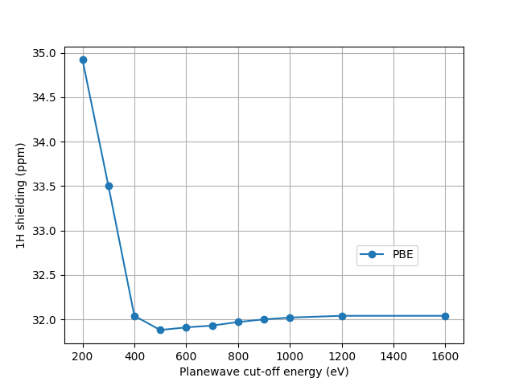
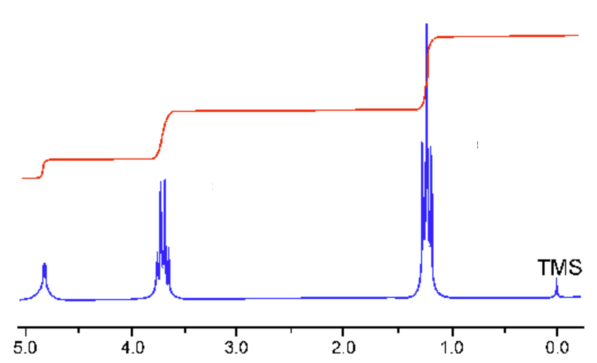

示例 1：乙醇

发现氢谱中确实可以观测到化学位移的现象，是由斯坦福大学的Packard、Arnold和Dharmatti于1951年实现的（如图1所示）。在本教程中，我们将尝试重现这一结果。
获取输出结果
本教程将介绍乙醇的计算，使用以下两个文件：
乙醇.cell
%BLOCK LATTICE_ABC
6 6 6
90 90 90
%ENDBLOCK LATTICE_ABC
%BLOCK POSITIONS_ABS
H 3.980599 4.178342 3.295079
H 5.033394 3.43043 4.504759
H 5.71907 4.552257 3.315353
H 3.720235 5.329505 5.509909
H 4.412171 6.433572 4.317001
H 5.911611 5.032284 6.242202
C 4.84694 4.350631 3.941136
C 4.603025 5.518738 4.882532
O 5.746254 5.812705 5.6871
%ENDBLOCK POSITIONS_ABS
%BLOCK KPOINTS_LIST
0.25 0.25 0.25 1.0
%ENDBLOCK KPOINTS_LIST
看一下 单元格 并且 参数 文件。请注意，唯一特殊的部分是 ethanol.param 文件是
task = magres
运行一个标准的CASTEP计算以研究乙醇。查看该 ethanol.castep 输出文件。最后，你应该能够在如下表格中找到各向同性化学屏蔽、各向异性以及不对称性：
====================================================================
| Chemical Shielding Tensor |
|------------------------------------------------------------------|
| Nucleus Shielding tensor |
| Species Ion Iso(ppm) Aniso(ppm) Asym |
| H 1 29.45 8.84 0.14 |
| H 2 30.10 8.07 0.20 |
| H 3 29.94 7.12 0.06 |
| H 4 26.83 8.02 0.95 |
| H 5 27.24 -7.07 0.90 |
| H 6 31.93 13.99 0.46 |
| C 1 157.27 33.77 0.70 |
| C 2 110.73 69.91 0.42 |
| O 1 268.63 -50.78 0.96 |
====================================================================
你还可以在文件中找到这些信息（以及更多详细内容）。 ethanol.magres，其中包含诸如表格这样的内容
============
Atom: H 1
============
H 1 Coordinates 3.981 4.178 3.295 A
TOTAL Shielding Tensor
30.1276 1.2172 3.7366
1.9301 27.4802 2.4707
4.0710 2.2023 30.7511
H 1 Eigenvalue sigma_xx 26.1030 (ppm)
H 1 Eigenvector sigma_xx 0.3550 0.6810 -0.6405
H 1 Eigenvalue sigma_yy 26.9119 (ppm)
H 1 Eigenvector sigma_yy 0.6932 -0.6514 -0.3085
H 1 Eigenvalue sigma_zz 35.3439 (ppm)
H 1 Eigenvector sigma_zz 0.6273 0.3345 0.7033
H 1 Isotropic: 29.4529 (ppm)
H 1 Anisotropy: 8.8365 (ppm)
H 1 Asymmetry: 0.1373
你可能希望打开 ethanol.magres 与 MagresView.
分析
接下来我们确定哪些（氢）离子对应分子的哪个部分——以乙醇为例，我们需要确定哪些氢原子对应于CH基团。3 CH2 以及OH。这可以通过将单元格文件上传到VESTA或MagresView并单击每个原子来实现。

这里你可以看到其中一个CH3 氢原子是第3个原子。如果你对它们都这样做，你应该会发现原子1、2和3是CH。3 氢原子，4 和 5 是 CH2 氢原子是6个，其中OH基团中的氢原子是第6个。
有必要检查结果是否收敛。运行一个收敛性测试图，范围为
从200到1600 eV得到该图
这里截断能为600 eV是合理的——它仍然相对较快，并且应该已经收敛得较好。800 eV的收敛性更好。由于存在氧原子，截断能相当高。
接下来我们将查看收敛后的各向同性氢屏蔽值。我们将将其与实验数据进行比较。三个甲基（CH）3) 质子发生快速交换；它们的“旋转”速度比核磁矩过程更快。因此，磁矩将“观测”到一种平均的化学屏蔽。对于CH也是如此。2 质子。
然后我们可以对CH进行平均处理3 以及CH2 化学屏蔽。例如，CH基团的屏蔽值为……2 氢原子（原子4和5）位于 ethanol.castep 文件（如上所示）中的值为 26.83 ppm 和 27.24 ppm：CH 的平均值2 屏蔽为 27.04 ppm。CH3同时，其平均屏蔽值为29.83 ppm。最后，单个OH氢的屏蔽值为31.93 ppm。我们现在有3个独特的化学屏蔽值（尽管在你的情况下，这些数值可能会略有不同）。
我们现在需要将化学屏蔽值进行转换 \sigma_{iso}；用于化学移位 \delta_{iso} 在实验尺度上。我们使用关系式： \delta_{iso}=\sigma_{iso} - \sigma。一个合适的 \sigma_{ref} 用于 1H 是 30.97 ppm。

图2显示了一个现代高分辨率 1乙醇液态时的H谱。请注意，峰因J耦合——核自旋之间的相互作用——而分裂。 1H 原子的磁矩。三个峰大致位于 1.2 ppm、3.7 ppm 和 5 ppm —— 在本教程中测得的位移为 1.14 ppm（CH）3 屏蔽), 3.94 ppm (CH2) 和 -0.96 ppm (OH)。羟基氢的数值明显不同，而另外两个值大致一致。羟基氢的化学位移对氢键非常敏感。在孤立分子（根据我们的计算）中的值与液态乙醇中的值有显著差异。在非极性溶剂中实验测得的值应更接近我们计算的孤立分子结果——但需注意，该测量对微量吸附水极为敏感，而吸附水会改变羟基氢的化学位移。